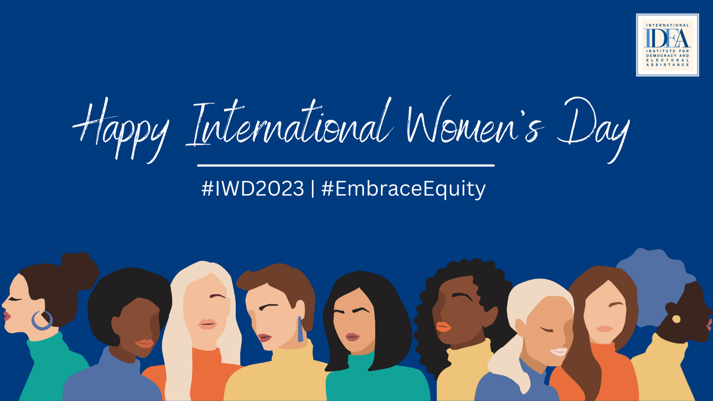

<!DOCTYPE html>
<html>

<head>
  <!-- Basic -->
  <meta charset="utf-8" />
  <meta http-equiv="X-UA-Compatible" content="IE=edge" />
  <!-- Mobile Metas -->
  <meta name="viewport" content="width=device-width, initial-scale=1, shrink-to-fit=no" />
  <!-- Site Metas -->
  <meta name="keywords" content="" />
  <meta name="description" content="" />
  <meta name="author" content="" />

  <title>Isu | FSLDK Baraya</title>

  <link href="/images/logofsldk.png" rel="icon">


  <!-- bootstrap core css -->
  <link rel="stylesheet" type="text/css" href="css/bootstrap.css" />

  <!-- fonts style -->
  <link href="https://fonts.googleapis.com/css2?family=Roboto:wght@400;500;700;900&display=swap" rel="stylesheet">

  <!--owl slider stylesheet -->
  <link rel="stylesheet" type="text/css" href="https://cdnjs.cloudflare.com/ajax/libs/OwlCarousel2/2.3.4/assets/owl.carousel.min.css" />

  <!-- font awesome style -->
  <link href="css/font-awesome.min.css" rel="stylesheet" />
  <!-- nice select -->
  <link rel="stylesheet" href="https://cdnjs.cloudflare.com/ajax/libs/jquery-nice-select/1.1.0/css/nice-select.min.css" integrity="sha256-mLBIhmBvigTFWPSCtvdu6a76T+3Xyt+K571hupeFLg4=" crossorigin="anonymous" />
  <!-- datepicker -->
  <link rel="stylesheet" href="https://cdnjs.cloudflare.com/ajax/libs/bootstrap-datepicker/1.3.0/css/datepicker.css">
  <!-- Custom styles for this template -->
  <link href="css/style.css" rel="stylesheet" />
  <!-- responsive style -->
  <link href="css/responsive.css" rel="stylesheet" />

</head>

<body class="sub_page">

  <div class="hero_area">
    <!-- header section strats -->
    <header class="header_section">
      <div class="header_bottom">
        <div class="container-fluid">
          <nav class="navbar navbar-expand-lg custom_nav-container ">
            <a class="navbar-brand" href="index.html">
              
            </a>


            <button class="navbar-toggler" type="button" data-toggle="collapse" data-target="#navbarSupportedContent" aria-controls="navbarSupportedContent" aria-expanded="false" aria-label="Toggle navigation">
              <span class=""> </span>
            </button>

            <div class="collapse navbar-collapse" id="navbarSupportedContent">
              <div class="d-flex ml-auto flex-column flex-lg-row align-items-center">
                <ul class="navbar-nav  ">
                  <li class="nav-item active">
                    <a class="nav-link" href="index.html">Beranda <span class="sr-only">(current)</span></a>
                  </li>
                  <li class="nav-item">
                    <a class="nav-link" href="tulisan.html"> Tulisan Isu</a>
                  </li>
                  <li class="nav-item">
                    <a class="nav-link" href="tentang.html">Tentang Kami</a>
                  </li>
                  <li class="nav-item">
                    <a class="nav-link" href="kontak.html">Kontak</a>
                  </li>
                </ul>
              </div>
            </div>
          </nav>
        </div>
      </div>
    </header>


  <!-- contact section -->
  <section class="client_section layout_padding">
    <div class="container">
        <h2><center>
          International Women's Day : Senada dengan POV Islam?
        </h2>
        <br/>
        <p><center><font color="gray">Dipublikasikan Rabu, 15 Maret 2023</font></center></p>
        <br/>
        <center></center>
        <p><center><font color="gray">Poster Peringatan Hari Perempuan Internasional</font></center></p>
        <p><center><font color="gray">Sumber : International IDEA</font></center></p>
    </div>
            <div class="box">
              <p style="text-align: justify;">
               Tanggal 8 Maret 2023 kemarin, dunia ramai merayakan Hari Perempuan 
Nasional atau International Women’s Day. 
Melansir dari Kompas.TV, perayaan yang diperingati setiap tanggal 8 Maret ini 
merupakan bentuk peringatan perjuangan perempuan dalam mencapai 
kesetaraan gender dan hak-haknya. 
              </p>
              <p style="text-align: justify;">
                Lalu bagaimana ceritanya bisa lahir peringatan Hari Perempuan Internasional?
              </p>
              <p style="text-align: justify;">
                Nah jadi begini sejarah singkatnya..
              </p>
              <ul type="circle">
                <li> Tahun 1908, sekitar 15.000 perempuan melakukan aksi demo di New 
                  York, AS. Aksi ini adalah bentuk protes terhadap peningkatan standar 
                  upah dan pemangkasan jam kerja yang berlaku</li>
                  <li> Tahun 1910, Clara Zetkin seorang aktivis komunias pendukung hak 
                    perempuan mengajukan gagasan terkait penetapan hari perempuan 
                    Internasional. Gagasan tersebut disetujui di konferensi perempuan yang 
                    dihadiri lebih dari 100 perempuan yang berasal dari 17 negara</li>
                    <li>  8 Maret 1975, PBB resmi menetapkan tanggal tersebut sebagai 
                      peringatan hari perempuan Internasional</li>
              </ul>
              <p style="text-align: justify;">
                Nah pertanyaannya…
              </p>
              <p style="text-align: justify;">
                Bener nggak sih perempuan itu nggak setara dengan laki-laki?
              </p>
              <p style="text-align: justify;">
                Yuk kita bahas bareng bareng ya!
              </p>
              <p style="text-align: justify;">
                Kedudukan perempuan pada masa Arab Jahiliah dan di dunia pada umumnya 
                memang dianggap hina dan rendah. Bahkan pada masa itu, bayi wanita yang 
                dilahirkan di kubur hidup-hidup di dalam tanah. Perempuan hanya dijadikan 
                sebagai objek pemuas nafsu lelaki, serta sebagai pelayan dan budak semata.                
              </p>
              <p style="text-align: justify;">
                Tapi kita lihat ketika cahaya Islam mengubah itu semua               
              </p>
              <p style="text-align: justify;">
                Dalam Islam, perempuan begitu mulia dan diangkat derajatnya. Sebagaimana 
                perkataan Syeikh Muhammad Mutawali asy-Sya’rawi dalam kitabnya:               
              </p>
              <p style="text-align: justify;">
                “Sungguh ketika Islam datang ke bumi, ia mengangkat derajat wanita, memberikan kebebasannya, kemuliaannya, keperibadiannya, serta menyamaratakannya dengan laki-laki dalam hak-hak dan kewajiban.” (Syekh Sya’rawi, Fiqhu al-Mar’ah al-Muslimah, 2019, halaman 9).           
              </p>
              <p style="text-align: justify;">
                (Wuih MashaAllah banget ya gaes!)
              </p>
              <p style="text-align: justify;">
                Lantas seperti apa saja peran perempuan menurut Islam?
              </p>
              <ol>
                <li> Dalam dunia pendidikan</li>
                <p style="text-align: justify;">
                  Peranan seorang perempuan sebagai madrasah sangatlah dibutuhkan untuk 
                  menciptakan generasi yang unggul. Sehingga perempuan dituntut memiliki 
                  pendidikan yang akan membentuk keahliannya.
                </p>
                <li>Dalam kehidupan sosial</li>
                <p style="text-align: justify;">
                  Peranan sosial ini dilakukan dengan tetap memperhatikan fokus peranan masingmasing pada kaum lelaki dan kaum perempuan
                </p>
                <li> Dalam berkarir</li>
                <p style="text-align: justify;">
                  Dalam Kitab al-Mawsu’at al-Fiqhiyyah al-Kuwaitiyyah, menurut ulama dan 
                  cendekiawan asal Mesir, Sayid Qutb membolehkan wanita bekerja di bidang 
                  kemampuannya asal disesuaikan dengan kodrat kewanitaannya.
                </p>
                <br/>
              </ol>
              <p style="text-align: justify;">
                Allah swt. Berfirman dalam QS. Al Hujurat ayat 13 :
              </p>
              <p style="text-align: justify;">
                “Hai manusia, sesungguhnya Kami menciptakan kamu dari seorang laki-laki dan 
                seorang perempuan dan menjadikan kamu berbangsa-bangsa dan bersuku-suku 
                supaya kamu saling kenal-mengenal. Sesungguhnya orang yang paling mulia 
                diantara kamu disisi Allah ialah orang yang paling takwa diantara kamu. 
                Sesungguhnya Allah Maha Mengetahui lagi Maha Mengenal." (Qs. Al Hujurat: 
                13).                
              </p>
              <p style="text-align: justify;">
                Laki-laki dan perempuan memiliki kedudukan dan kesempatan yang sama untuk 
                berbuat dalam kehidupan bermasyarakat.
              </p>
              <p style="text-align: justify;">
                Siapa yang nggak kenal dengan Khadijah?
              </p>
              <p style="text-align: justify;">
                Sosok perempuan pengusaha sukses, berpendidikan tinggi, bisa dibilang 
                independent women dan financially freedom. Tapi dibalik achievement itu 
                semua, Khadijah tetap menjalani perannya sebagai seorang istri dan Muslimah 
                dengan sempurna, tanpa mengurangi kehebatan beliau. 
              </p>
              <p style="text-align: justify;">
                Nah, lewat paparan di atas jadi tau kan bahwa laki-laki dan perempuan memiliki 
                kedudukan yang sama, tetapi keduanya tetap mempunyai peran dan fungsi yang 
                berbeda sesuai dengan fitrah yang telah Allah berikan.
              </p>
              <p style="text-align: justify;">
                FYI, kedudukan dan kemuliaan manusia itu tidak didasarkan pada jenis 
                kelaminnya, tetapi terletak terhadap ketakwaannya.
              </p>
            <br/>
            </div>
            <p style="text-align: justify; text-indent: 0.5in;">
              Referensi :
            </p>
            <p style="text-align: justify; text-indent: 0.5in;">
              <a href="https://narasi.tv/read/narasi-daily/sejarah-hari-perempuan-internasional-dan-makna-tema-embraceequity-tahun-2023">
                https://narasi.tv
              </a>
            </p>
            <p style="text-align: justify; text-indent: 0.5in;">
              <a href="https://www.rri.co.id/lain-lain/182079/sejarah-hingga-tema-hari-perempuan-internasional#:~:text=Perayaan%20IWD%20dimulai%20pada%201908,untuk%20menetapkan%20Hari%20Perempuan%20Internasional">
                https://www.rri.co.id
              </a>
            </p>
            <p style="text-align: justify; text-indent: 0.5in;">
              <a href="https://dppai.uii.ac.id/peran-wanita-muslimah-dalam-membangun-masyarakat/">
                https://dppai.uii.ac.id
              </a>
            </p>
            <p style="text-align: justify; text-indent: 0.5in;">
              <a href="https://almaiyyah.iainpare.ac.id/index.php/almaiyah/article/download/321/242/">
                https://almaiyyah.iainpare.ac.id
              </a>
            </p>
            <p style="text-align: justify; text-indent: 0.5in;">
              <a href="https://moraref.kemenag.go.id/documents/article/97406410605903250">
                https://moraref.kemenag.go.id
              </a>
            </p>
            <p style="text-align: justify; text-indent: 0.5in;">
              <a href="https://islam.nu.or.id/sirah-nabawiyah/peran-dan-keadaan-wanita-sebelum-dan-sesudah-datangnya-islam-ONIjA">
                https://islam.nu.or.id
              </a>
            </p>
            <p style="text-align: justify; text-indent: 0.5in;">
              <a href="https://sumbar.kemenag.go.id/v2/post/2055/islam-dan-kesetaraan-gender-hubungan-pengoptimalisasi-potensi-kaum-perempuan-indonesia-menurut-ajaran-islam.html#:~:text=Dalam%20ajaran%20Islam%20laki%2Dlaki%20dan%20perempuan%20memiliki%20kedudukan%20yang,berbuat%20dalam%20kehidupan%20di%20masyarakat">
                https://sumbar.kemenag.go.id
              </a>
            </p><br/>
            <p style="text-align: justify; text-indent: 0.5in;"><font color="gray">Penulis : </font></p>
      <p style="text-align: justify; text-indent: 0.5in;"><font color="gray">1) Salma Nauroh</font></p>
      <p style="text-align: justify; text-indent: 0.5in;"><font color="gray">2) Galvin Eka Nurullah</font></p><br/>
             <p style="text-align: justify; text-indent: 0.5in;"><font color="gray">Editor : Galvin Eka Nurullah</font></p>
      
            </div>
  </section>
  
  <!-- end contact section -->
<!-- info section -->
<section class="info_section ">
  <div class="container">
    <div class="info_top">
      <div class="info_logo">
        <a href="">
          
        </a>
      </div>
    </div>
    <div class="info_bottom layout_padding2">
      <div class="row info_main_row">
        <div class="col-md-6 col-lg-10">
          <h5>
            Bidang Isu Komisi A Pusat Komunikasi Daerah FSLDK Bandung Raya
          </h5>
          <div class="info_contact">
            <a href="">
              <i class="fa fa-map-marker" aria-hidden="true"></i>
              <span>
                Alamat : Jalan Raya Bandung Sumedang KM.21, Hegarmanah, Kec. Jatinangor, Kabupaten Sumedang, Jawa Barat, 45363
              </span>
            </a>
            <a href="">
              <i class="fa fa-phone" aria-hidden="true"></i>
              <span>
                Informasi : 081214985688 (Nisa)
              </span>
            </a>
            <a href="">
              <i class="fa fa-envelope"></i>
              <span>
                Email : fsldkbandungraya@gmail.com
              </span>
            </a>
          </div>
          <div class="social_box">
            <a href="">
              <i class="fa fa-facebook" aria-hidden="true"></i>
            </a>
            <a href="">
              <i class="fa fa-twitter" aria-hidden="true"></i>
            </a>
            <a href="">
              <i class="fa fa-youtube" aria-hidden="true"></i>
            </a>
            <a href="">
              <i class="fa fa-instagram" aria-hidden="true"></i>
            </a>
          </div>
        </div>
      </div>
    </div>
  </div>
</section>
<!-- end info_section -->


<!-- footer section -->
<footer class="footer_section">
  <div class="container">
    <p>
      &copy; <span id="displayYear"></span> Bidang Isu Komisi A
      <a href=" ">FSLDK Bandung Raya</a>
    </p>
  </div>
</footer>
<!-- footer section -->

  <!-- jQery -->
  <script src="js/jquery-3.4.1.min.js"></script>
  <!-- bootstrap js -->
  <script src="js/bootstrap.js"></script>
  <!-- nice select -->
  <script src="https://cdnjs.cloudflare.com/ajax/libs/jquery-nice-select/1.1.0/js/jquery.nice-select.min.js" integrity="sha256-Zr3vByTlMGQhvMfgkQ5BtWRSKBGa2QlspKYJnkjZTmo=" crossorigin="anonymous"></script>
  <!-- owl slider -->
  <script src="https://cdnjs.cloudflare.com/ajax/libs/OwlCarousel2/2.3.4/owl.carousel.min.js"></script>
  <!-- datepicker -->
  <script src="https://cdnjs.cloudflare.com/ajax/libs/bootstrap-datepicker/1.3.0/js/bootstrap-datepicker.js"></script>
  <!-- custom js -->
  <script src="js/custom.js"></script>


</body>

</html>
